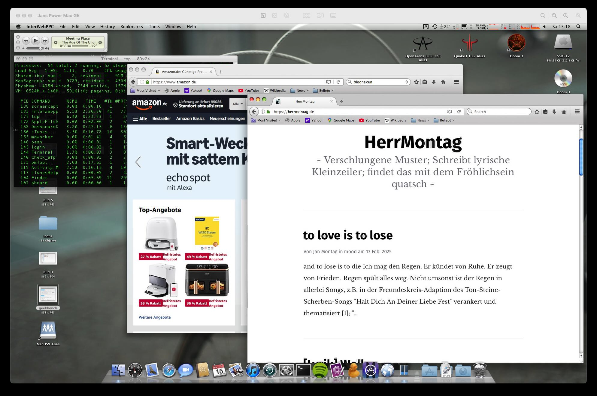
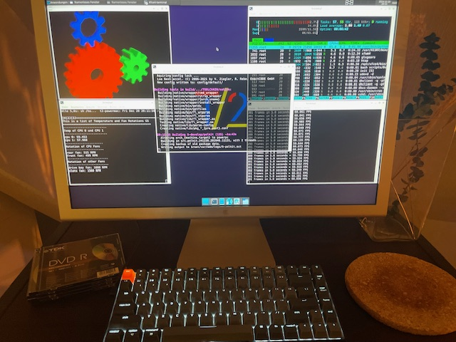

TermNavi Terminal Navidrome Client ppc64
So the other day I tried to connect to my Navidrome MP3 Streaming Server, I call it "Spotify at Home", via Webinterface to listen to some music, but there were no way to do this. The Webbrowsers available are too old. Sad.
So I decided to programm a really small Navidrome Terminal Client called TermNavi (yes I know... need better name) to listen to my MP3. And what shall I say? The first implementation is ready. I tested and successfully compiled on aarch64 (my MacMini M4) and the legendary Powermac G5 with ARCH Linux or Debian Sid ppc64.

So this it is:
- MVP for playback
- Rust for pgramming
- Ratatui für the Terminal UI (TUI)
- a Powermac G5 with PPC Linux
Really happy, it is my first rust project.
known bugs
- State handling is missing
- UI Rendering for more selections
- scroll logic is worst
And as a now cool hacker guy, I pushed everything in my github repo. But don't expect too much, I am a worst programmer, I often do not understand what is going on and I have everything in one file, the main.rs :-)
Ressources
Tags: ppc64, navidrome, rust, terminal, powermacg5, linux
Claws-Mail 4.3.1 ArchPOWER Linux successfully compiled for PPC64
Due to the lack of a good graphical email client [^1] for my Arch POWER Linux Distro (Arch Linux for PowerPC), I tried several things and ended up with claws-mail. But it is not installable or not existing in the repos of pacman for powerpc. So I dcided to compile it by myself.
Claws-Mail 4.3.1 just compiled successfully on my Powermac G5.
 claws-mail first window, first start
claws-mail first window, first start
Claws Mail is an email client (and news reader), based on GTK+, featuring:
- Quick response
- Graceful, and sophisticated interface
- Easy configuration, intuitive operation
- Abundant features
- Extensibility
- Robustness and stability
 todays screenshot of my inbox on claws-mail on my powermac g5
todays screenshot of my inbox on claws-mail on my powermac g5
Okay, it is an really not beautiful email client, but it works great and we should not forget my ancient hardware from 2005 :-)
[^1]: I think there is no one. Not only one.
Ressources
Tags: archlinux, powermacg5, email, ppc, ppc64
Hello ArchPOWER Linux for PPC64
In a nice comment from Matias, he told me he is using ArchPOWER Linux, an unofficial Build of Arch Linux for PowerPC, PPC64, PPC and PPCle for the Power8 Architecture etc. pp.; If I remember correctly, I stumbled across this Linux Distro while I researched for the best Linux for my Powermac G5, but maybe because I was at the beginning of my Linux journey on these machines, I found it to heavy or something else told me not to try. I don't know but it is not important anymore, because I installed ArchPOWER Linux current on my NVMe-SSD in the Powermac, multi-booting with T2 Linux, Debian 12 SID, Adelie Linux and Fienix Linux. :-)

Hello T2/Linux 25.04 - I switched back to 12.24
Man, I am a little bit frustrated right now. Everytime a new release of
T2/Linux
is going online, I am really happy to try it out on my Powermac G5. I download
it and dd it to a USB Stick (here
I explain how to boot a PPC Mac from USB) and than boot the Powermac via OpenFirmware
from that USB Stick and everything works like charme. Like I exspect it.
The Install Process is straight forward and easy, thanks to STONE, the Installer
of T2. But with Version 25.04 there is a problem, the FANs turn to MAX rotation like
there is a kernel module not loaded or something like that and you think the G5
will soon fly away. The next thing: X seems to be broken, I can't startx
anymore.
In 24.12 these things were okay, X works and even 3D-Acceleration works so I could use it in a quite usual way. But now - all of this is gone. Everytime I try, there is another problem. Something other broken. And I am not smart enough to fix it. I do not understand enough and there is not enough documentation to get this done. Sure, René is a One-Man-Show with his T2 Linux Project and he is fixing a lot of older drivers and software packages and he earns nothing and I say thank you man. Great Job. But even in his documentation, I am unable to find the right solution e.g. to crosscompile not the whole target, just a package and all of it's depencies.
I never got Palemoon or ArcticFox compiled or crosscompiled, because there are errors I canot solve. I installed T2/ARM64 on my Mac Mini M4 because this small machine is really powerful so it is a great crosscompoling solution for the me at home for my PPC64 Powermac. But it starts while compiling gcc. I am unable to compile GCC. And without GCC there is no way to compile anything further.
How do I run update-grub from another Partition or a LiveCD?
As you know my Setup, I will shortly explain again. In my Powermac G5 there is an SATA-SSD as a replacement for the old spinning Apple HDD. On this SSD I installed Mac OX 10.5 and also Debian SID for PPC, to get the Partition-Scheme and GRUB installed.
I also built in a NVMe-SSD with 1 TB because the Powermac11,2 has PCI-Express Slots like it is standard nowadays. The OpenFirmware in the Powermac doesn't know what an NVMe-SSD is and therefore can't recognize it or boot it. Also Mac OS X 10.5 doesn't see the device. The technic is too young and there are no drivers, that is the reason for that.
But lucklily, Linux has the drivers for that. And that's the reason for my Setup. Boot Grub from SSD because that can the Powermac. Than load the things you need for NVMe and boot the linux off the NVMe-SSD.
I have 4 Linux on that NVMe-SSD and that works great. But it is a problem to update the Grub Bootloader everytime there is a new kernerl or something other changed. Long story short, here I will tell (me) you, how to update grub via chroot.
Release: T2 Linux 25.4 "It Only Does Everything"
A lot of crazy things happen right now. A few minutes ago I reported about the living sign of Fienix Linux after the APT Repo down and now I see there is a new version of latest and greatest T2 Linux (ver. 25.4) from Rene Rebe.
With a total of 17 pre-compiled base install ISOs for various Glibc, Musl and uClibc combinations are available for 12 CPU ISAs: Alpha, ARM(64), HPPA64, IA64, MIPS64, PowerPC(64), RISCV64, SPARC64, i586, x86-64. On most architectures the release still boots with as little as 512MB of RAM or even less, and ISO downloads are less than 2GB for base Wayland desktop with Firefox.
T2 runs well on my Powermac G5, as I stated here for detail.
Ressources
- T2/SDE 25.4 announcement
- T2 Download Portal for 25.4
- T2 Linux for direct download for PPC64/32 (64-bit OS kernel, 32-bit user-space)
- T2 Main Website
- Quick Build in seven-1 easy steps
- Getting started w/ a fresh T2 install
- Rene Rebes Medium Blog
Tags: t2linux, powermacg5, linux, ppc64
Update to Fienix Linux
As I wrote in a few articles before, I am a big fan of Fienix Linux because it works absolutely amazing on my Powermac G5, it can even render complex and modern Websites like my other Weblog (Ghost CMS) and all the big and modern new Websites.
However, as I continued to use Fienix, I found out that I couldn't install any updates or other software packages. After some research, I discovered that the Fienix APT Repo was down. I asked at the corresponding youtube channel and even at the Website, but there was no answer.
Today, almost by chance, I discovered the official article on the Fienix website. The developer writes:
The Fienix software repository was "unreconciled" due to an unexpected interruption to an update process. Unfortunately, a backup did not exist. Effort to reconcile the repository were unsuccessful. This caused package unavailability, broken packages and broken updates.
He can't fix it in Version 6 so he hopes to get it fixed with Version 7, what is months ago. His solution as follows:
If you have installed all the packages you want/need, you don't need to do anything. Browser updates are generally posted to the "Linux on PowerPC" Facebook group, Hyperion forums, and elsewhere. You can also get packages from Debian, or switch over to Debian completely.
At this point I find it really good that the website, the project and Fienix Linux itself is not dead, it's has a broken APT Repo and need to be fixed, but the developer is willing to continue. That gives me hope for my Powermac G5.
Keep up the great work
(via)
Tags: powermacg5, linux, ppc64, eolie, browser, fienix
Mac OS X 10.5.8 with modern Browser
As you can see in the screenshot, I am visiting both my weblog and amazon.de Websites with the Powermac G5 2,0 GHz. This is only possible because there is a relative modern webbrowser (2022) by user wicknix, built upon TenFourFox.
 InterWebPPC: Mozilla for Power Macintosh
{kind=link}
So with this webbrowser the old 20 years old Powermac is able to visit modern websites like Amazon. No, I dont like amazon, but is is an example. Youtube also works, but loads a lot longer.
With this browser it is possible to use the mac in a day to day modern web world, but slow. I can even access webmails, read yahoo news or something like that while chatting via colloguy and telnetting into my server.
Really sad to read this:
This repository has been archived by the owner on Jul 26, 2023. It is now read-only.
Another good one is gone, but wicknix do have his reasons I bet.
Ressources
- https://github.com/wicknix/InterWebPPC
Tags: macosx, powermacg5, firefox, leopard
A picture of my Powermac G5
My Powerhouse :-)
 A picture of my Powermac G5
A picture of my Powermac G5
- Powermac G5 11,2 with
- 2 GHz Dual Core IBM PPC970 CPU
- 12 GB DDR2 Ram
- PCIe NVMe-SSD with 1 TB SSD
- Apple Cinema HD 23" Display
- Original Keyboard and Mouse
Tags: powermacg5
Fienix Linux seems to be dead
I find it quite sad because I only recently got to know Fienix Linux, even though it has been around for a long time. And I think it's absolutely great because it works better than any other Linux on the Powermac G5 that I've tried so far:
- Graphics acceleration
- modern web browser
But unfortunately the package sources are dead, this Linux is based on Debian SID and uses APT. The Fienix source server is unreachable and there is no alternative.
I tried to contact the developer, I know that Fienix Linux is a one-man project and therefore there are few resources available, but I haven't received any response.
So it's not really possible to reinstall packages, I also can't install a development environment to compile myself and so it remains nice, but not very expandable and usable.
Tags: powermacg5, linux, ppc64, eolie, browser, fienix
Fienix Linux for PPC Computers
The other day I stumbled across Fienix Linux. It is a Distribution maintained by one man, Casey Cullen. It is based on debian, but with focus on powerpc first. I just tried to install it on my Powermac G5. And it works great!
 Fienix Linux 6.0.1 on my Powermac G5, on real Hardware.
Fienix Linux 6.0.1 on my Powermac G5, on real Hardware.
How To Boot Powermac from USB
There are many different mentions in the web. Some say it is impossible to boot Powermacs from USB, others says: only PowermacG5 from 7,3 Revision are able to boot from USB and the third party says: every Powermac is bootable.
And because I own this late and great Powermac G5 11,2 and I don't want to always burn a CD/DVD everytime I try a new Linux or something else out, I invesitagted a little bit further: the third statement is correct: every Powermac can boot from USB.
But it is not so easy like we knew it from Intel/x86 Machines. Press a button and it boots. Because this is a Powermac with a PowerPC CPU and therefore it uses Open Firmware as an BIOS alternative. Open Firmware was far ahead of it's time with great features, but it is a cryptical terminal. :-) So far - so good.
Firefox 128-ESR on PPC64 Powermac G5
Since I own the Powermac G5 and play around with it, I want to install a modern Browser and therefor, I want to run Firefox on it. But it is not possible. I tried different Linux Distros like Debian 12 PPC64, T2/Linux by Rene Rebe and even some special builts of ARCH for PPC64 - but I had no luck. No one had luck and even the Debian Mailinglist said it is not possible to built Firefox for PPC64 at this time. I even wrote about that.
And now, the other day, I tried Adelie Linux PPC64 and et voila: I fucking could start Firefox and tested some Websites like youtube.com and it worked. So I made a screenshot because I could not believe myself. I totally hope I can use Firefox sooner than later on the other Distros too.
 Firefox 128 ESR running on top of LXQT Adelie Linux Powerpc 64 Powermac G5
Firefox 128 ESR running on top of LXQT Adelie Linux Powerpc 64 Powermac G5
Sincerely, Jan
Tags: powermacg5, firefox, ppc64, linux
Using OpenFirmware on Powermacs
There is always the discussion around if the Powermacs are able to boot from USB or not and I can say: every Powermac G5 is able to boot from USB Thumbdrive. So it is quite easy to dd an ISO of Linux or Leopard to an USB-Drive and boot-up the Powermac G5 with it. But also older Macs. Older Roms. Older Edlers.
Sorbet Leopard 10.5.9
There are quite a few Powermac Enthusiast around the world, like I am. They are using the Powermac G5 for day-to-day work and I think this is pretty cool, even when I think we need to go green as fast as possible in the reason of power consumption, I will give it a try. My G5 doesnt need more than 250 Watts even with the Cinema HD 23" Display in use.

magine if Mac OS X 10.6 Snow Leopard was released for the PowerPC architecture. Aging machines would have received a much-needed boost in performance, software updates would have carried on for a little bit further, and instrumental features would have been newly claimed -- resulting in pre-existing hardware being kept in service for much longer.
While Apple opted not to continue the development of Snow Leopard for PowerPC-based Macs, that did not stop dedicated communities from filling this void (and then some) over a decade later. Enter Sorbet Leopard, a fresh new release of Mac OS X designed exclusively for the venerable Power Macintosh, fifteen years after the final model was sold.
Built off of the rock-solid Mac OS X 10.5 Leopard base system, Mac OS X 10.5.9 Sorbet Leopard offers a significant jump in speed and security over its predecessor by utilizing advanced methods of performance optimization, system streamlining, and brand new features, all together rivaling most of the UX improvements seen in Snow Leopard on Intel machines.
Thanks to the over 70 new changes present in Mac OS X 10.5.9, here's what to expect once installed ...
- Faster startup times, application launch times, and network performance
- Smoother, more fluid, and more consistent UI animations
- A brand new app store tailored for only the best apps on Mac OS X 10.5.x
- Built-in tools to create RAM disks, run routine maintenance, configure hidden preferences, toggle background services, and more
- Full compatibility with the Apple Wireless Keyboard and Magic Mouse
- Full compatibility with Unicode 13.1 emoji characters
- Updated desktop pictures, user pictures, screen savers, fonts, and Apple dictionaries, alongside apps such as Dashboard 1.7, Exposé 1.1, Front Row 1.1, Spaces 1.1, Time Machine 1.1, Java Preferences 13.9.8, and System Profiler 10.6.0, all from the final release of Mac OS X 10.6 Snow Leopard
- Comprehensive system themes inline with OS X 10.8 Mountain Lion, macOS 10.13 High Sierra, and iOS 4 to 12, featuring authentic desktop pictures, user pictures, screen savers, and UI assets unique to each choice
- Updated security certificates inline with macOS 10.13 High Sierra
- Updated applications including Safari 11 with new security updates and performance improvements, QuickTime 7.7 Pro, Bash 4.3.30, and ntpd 4.2.8
- Integrated optimizations such as reduced disk activity, reduced CPU / RAM / disk usage, PowerPC-optimized binaries, and universal ad blocking
Ressources:
Tags: powermacg5, leopard, sorbet-leopard, macosx
Status of Firefox on PPC64 Big Endian
So yesterday was the release ouf 24.12 T2/Linux and the maintainer, creator and mastermind behind, René Rebe, were at a lifestream on youtube and twitch. So I played around with T2 on my Powermac G5 and listened to the stream and had a small chat with him. The most important part is an actual browser on that machine so I asked for the actual status of firefox.
René replied that the problems with big endian still exist and occours so there is no Firefox for Big Endian Machines at the moment. Firefox builts well on all little endian processors, but not on the big ones. There is no better answer at this time, but I hope he can do something when he have the time. Because to make that clear: there is not a big audience who is working on big endian ppc64 processors like my 970MP is in the world and I believe he get's not enough feedback and attention for his work for the open source community. But this is another part.
Debian also faces the problem of not building firefox for ppc/64, but they have other important things to do than to fix that.
I know there were patches from oracle for big endian firefox but I cant find the repository anymore. Maybe these patches and the Void Patches could do some important thing? [UPDATE] I found the patches for firefox.
I bet biggest problem are the people at firefox who doesnt care about big endian firefox builts for ppc64 because it is not important.
Ressources
- New Release Of T2/Linux
- Oracle Patches for Firefox
- PPC 750 Void Linux Firefox Patches
- void-packages-ppc750/srcpkgs/firefox/patches/big-endian-image-decoders.patch
- Debian Build Status Firefox
Tags: t2linux, powermacg5, linux, firefox
New Release Of T2/Linux
 T2/Linux 24.12 with XFCE Desktop on Powermac G5
As you know, this weblog is about my 2005 Powermac G5 and how to use it in 2024 soon 2025 as a normal computing device. I installed different Linux Distros on an 1 TB NVMe Device while computing with 12 GB-Ram.
And today reached me the information that famous René Rebe did released T2/Linux 12.2024 [1]. They are pleased to announce T2 24.12 as a major update with a total of 37 pre-compiled base install ISOs for various Glibc, Musl and uClibc combinations are available for 25 CPU ISAs:
New Kernel 6.12.5 for my Powermac G5
I plugged in that great NVMe SSD into my Powermac G5 because he supports PCI-Express (Version 1.0) and there is a 4x Speed Port that is unused (the x16 is for the Graphicscard) and now I ran a 1 TB NVMe-SSD in this Powermac and it is doing great. Because due the lack of drivers, Open Firmware is unable to boot from thos NVMe-SSDs, he is able to boot from a normal 2,5" SSD on the SATA-Port. So I installed the /boot/grub parts to that SSD and therefor it loads the Operating System from the NVMe :-) This is working quite well and I run
- Debian 12
- T2/SDE Linux
- Adélie Linux
for PowerPC 64 PPC64 plattform. I even write this article on that machine while on Debian 12 doing an
apt update && apt upgrade, running SeaLion Firefox and listening to music. Okay, it is not the
performance of a late and great 128 Core Threadripper, but it is quite impressive what this machine
from 2005 is able to do in the end of 2024.
powermac:~$ uname -a
Linux powermac 6.12.5-powerpc64 #1 SMP Debian 6.12.5-1 (2024-12-15) ppc64 GNU/Linux
I installed 12 GB-Ram and that NVMe-SSD in the System. It has a 2 GHz PPC970MP Dualcore CPU and the original Apple 23" Cinema Display. I like that setup, typing is done via the famous Keycron K2 Keyboard.
Actually, I have no glue what can I do to get things crosscompiled. Firefox for PowerPC is broken and epiphany is running with a white screen, doesnt load on Debian. There is no actual browser for PowerPC, what I really dislike. I now use SeaLion (Version 33.4) and it is surprisingly good, even github loads and a lot of other new websites. It is usable.
Tags: powermacg5, debian, powerpc64, ppc64
Ressources
- Adelie Linux: https://www.adelielinux.org/
- Fresh Install T2/Linux: https://t2sde.org/kb/8/?kb/8
- Debian 12 SID: https://cdimage.debian.org/cdimage/ports/12.0/ppc64/
- Linux on PowerPC Computers: https://thahipster.de/linux-auf-dem-powermac-g5/
- SeaLion on Github: https://github.com/wicknix/SeaLion/releases/tag/33.4.0
Still crosscompiling
I own this late and great Powermac11,2 Powermac G5 Dual Core 2,0 GHz and I love this machine for being what it is: a great retrobattle station and also a sexy workstation. It is so clean, no cables, everything can be accessed easily.